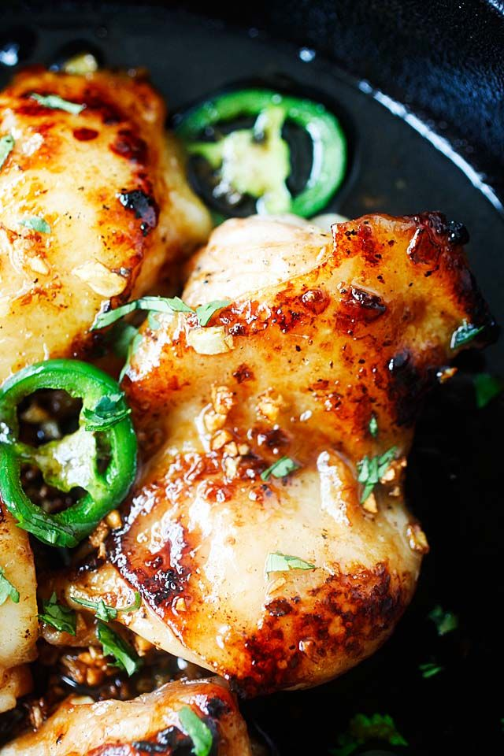

Caramelized Baked Chicken

Ingrediants
- 3 pounds chiccken wings
- 2 tbs olive oil
- 1/2 cup soy sauce
- 2 tbs ketchup
- 1 cup honey
- 1 clove garic, minced
- salt and pepper to taste
Steps to prepare caramelized Baked chicken
- Preheat the oven to 190 degree celsius
- Place the chicken in a baking dish. Mix together the oil, soy sauce, ketchup, honey, garlic, salt and pepper.Pour over the chicken.
- Bake the preheated oven for one hour, or until sauce is caramelized